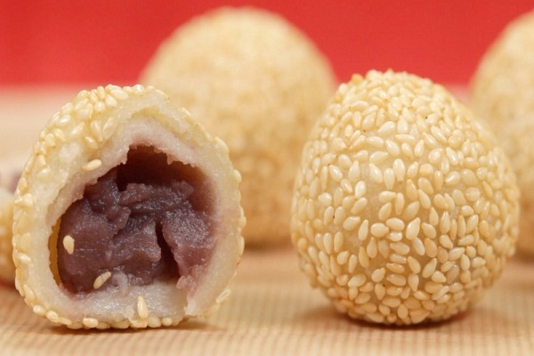

ONDE-ONDE MERAH
Onde-onde, a snack made from flour and stuffed with mung beans, is one of the most popular and easily found culinary delights in various regions. However, onde-onde from Jombang is unique in that it has red beans as its filling.

JENANG KUPAS
The snack known as dodol in other regions has a different name in East Java, jenang kupas. The manufacturing process is quite simple, using only ingredients such as coconut, flour and sugar. All the ingredients are mixed and stirred in a special stirring machine for making jenang.

AYAM PANGGANG URAP
Ayam panggang urap is a specialty from Jombang, made from free-range chicken meat, which is given a variety of spices, resulting in a delicious flavor. When consumed, it will usually be added with urap and other vegetables.